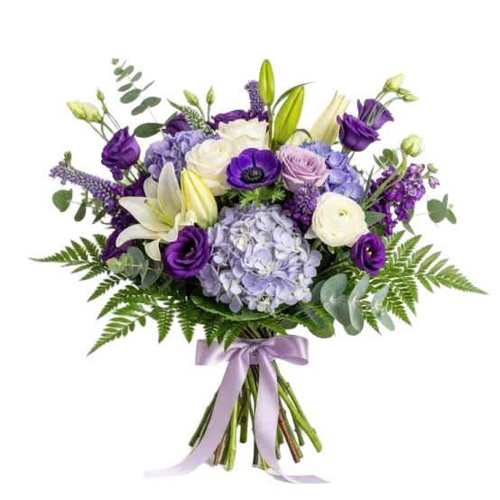

Arrastra para girar · Rueda o pellizca para acercarte · Doble clic para reiniciar
Para ti, mi princesa 💜

Para mi Elyan 💜
Amor, hoy quise regalarte algo distinto. No son flores que puedas sostener en tus manos, pero sí un pequeño universo que hice pensando en ti.
Ojalá cada flor morada te recuerde lo especial que eres para mí, incluso en esos días en los que no encontramos muchas palabras para decir lo que sentimos.
Me encanta compartir contigo esos momentos sencillos que terminan convirtiéndose en mis favoritos. Gracias por ser tú, princesa.